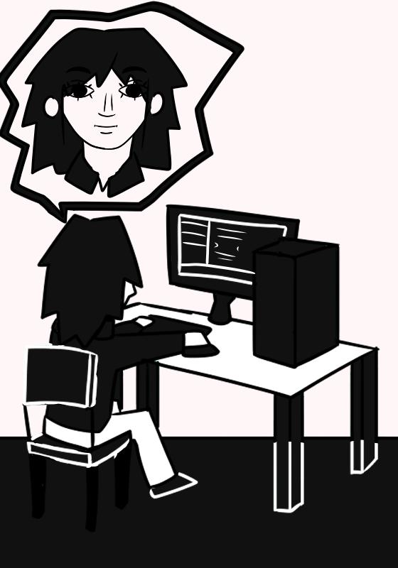

Sobre
Site desenvolvido para a disciplina "Práticas Experimentais III", da PUC-Rio, no período de 2026.1, como trabalho com o tema "cultura brasileira". O projeto consiste em um pequeno slider de 6 imagens, cada uma contendo um personagem do folclore brasileiro.